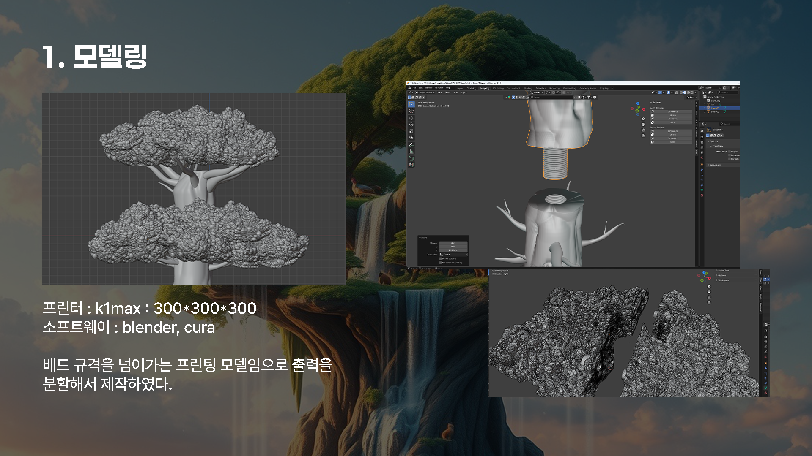
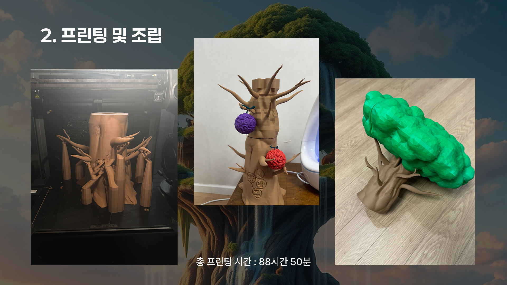
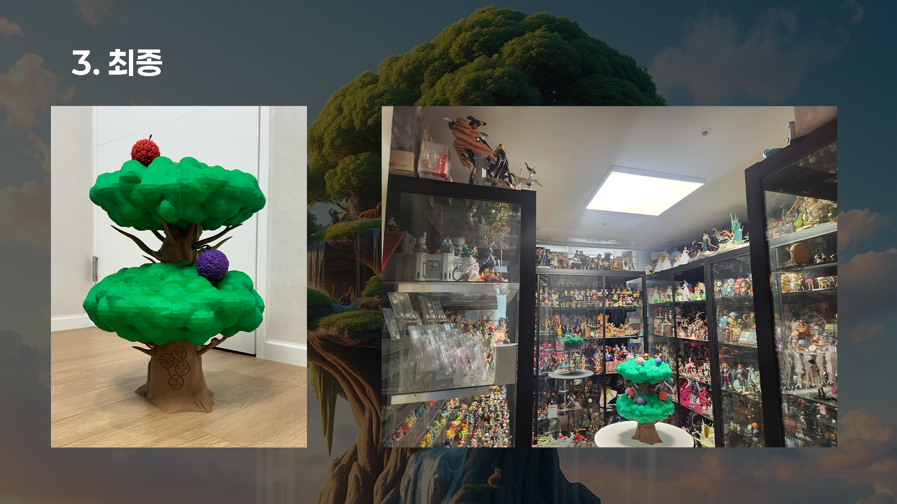

고객이 아이디어를 물리적 객체로 전환할 수 있도록 돕는 3D 프린팅 서비스를 제공합니다. 작은 개인 아이템부터 프로토타입까지 다양합니다.
3D · 모델링 · 2023-현재
3D 프린팅 서비스
아이디어를 물리적 객체로 전환하는 3D 프린팅 서비스

다양한 재료를 지원하며 프린트 가능성 및 구조적 문제에 대해 고객에게 조언합니다.
처음부터 모델을 제작하거나 기존 모델을 조정하여 최적의 프린팅 결과를 보장합니다.
Main Visuals
작업물 구성

① 모델링
베드 규격을 넘어가는 프린팅 모델임으로 출력을 분할해서 제작하였다. 프린터: K1max / 300×300×300, 소프트웨어: Blender, Cura
- Blender를 사용한 정밀한 3D 모델링
- 대형 출력을 위한 분할 설계 (300×300×300mm 프린터 사양 고려)
- Cura 슬라이싱 소프트웨어로 최적화된 프린팅 경로 설정

② 프린팅 및 조립
총 프린팅 시간: 88시간 50분. 여러 부품으로 나누어 출력한 후 정밀하게 조립하여 하나의 완성된 작품으로 만들었습니다.
- 88시간 50분의 총 프린팅 시간 투입
- 다중 파트 출력 후 정밀 조립
- 프린터 내부 실시간 모니터링 및 품질 관리

③ 최종
완성된 3D 프린팅 작품. 분할 출력된 여러 부품들이 완벽하게 조립되어 하나의 예술 작품으로 탄생했습니다. 디테일한 나뭇가지와 입체적인 나무 형상이 돋보입니다.
- 분할 출력 부품의 완벽한 결합
- 세밀한 나뭇가지 디테일 구현
- 대형 작품 제작 노하우 축적 (88시간 이상 프린팅)
Process
- 고객과 상담하여 부품의 목적과 제약 조건 파악
- 모델을 조정하거나 처음부터 제작한 후 프린팅을 위한 인필, 서포트, 공차 최적화
- 테스트 프린트 진행, 설정 개선 및 완성된 부품과 사진 제공
- 고객 피드백을 바탕으로 필요시 재프린팅 및 마무리 작업
Gallery
이미지 아카이브